Cambridge Notlarım
Şehir gözlemlerim:
-Bebekler, çocuklar, anneler, babalar, dedeler, nineler, çocuklu aileler burada herkes ama herkes bisiklet kullanıyor.
-Çok ciddi şekilde koşu yapıyorlar, hayat felsefesi olmuş artık.
-Trafik şehir içinde tek şerit, duraklama yapma ve sollama yok.
-Trafikte korna yok, az sayıda araç var, egzoz salınımı çok az.
-Yollar, bisiklet, yaya, duraklama, yolcu indirme, kargo indirme gibi alanlara çok özenli ayrılmış, çok iyi hesaplandığı için kurallara tam riayet ediliyor.
-Şehir doğal yaşamın içine kurulmuş, şehre göre şekillenen bir doğa yerine doğaya göre şekillenen bir şehir kurulmuş, yağmur ormanlarında gezer gibi şehir içinde geziyorsunuz.
-O kadar çok park var ki evden ve iş yerlerinden çok park alanı var ve bu alanlar müthiş bakımlı.
-Işık kirliliği yönetiliyor, evet her yer aydınlatılmıyor, aydınlatılan alanlar ise sınırlı olarak diz altı hizadan aydınlatılıyor.
-Kısaca: Otomobil az, nüfus az, doğa bakir, gürültü yok, hava temiz…
-Şehir küçük, nüfusu 125.000 ve bunun 20.000’i öğrenci.
-Şehirde fast food tüketimi çok az, zincir mağaza sayısı da çok az, sinema da çok fazla göremedim.
-Ormanlar içerisinde sincaplar, sular içerisinde kuşlar var, insanlar ve doğal yaşam tam entegre olmuş.
-Mağazalarda çoğunlukla otomatik ödeme kasaları var, kendi alışverişinizi yapıyorsunuz, ödüyorsunuz ve gidiyorsunuz.
-Şehirdeki 31 kolejin tamamı aslında birer kilise, kiliseler aynen korunuyor ve görevlerini yapıyorlar, ilave olarak kolej vazifesi görüyorlar. Birini merak edip içerisine girdim, büyük heybetli bir kapıdan girdiğim kolejin yani kilisenin içerisinde yemyeşil bir avlu ve enfes düzenlenmiş bir bahçe beni karşıladı. İçeride dolaştıkça buraların lojmanlar, kilise, derslikler gibi alanlar olduğunu anladım. Dışarıdan bakınca soğuk bir yapı olarak görünen bu kiliselerin içine girince başka bir dünyaya girmiş gibi oluyorsunuz.
-Çimlerde otomatik sulama göremedim, anladığım kadarı ile iklim gereği hiç sulama yapmıyorlar, çimler kendi kendilerine yetecek suyu alıyorlar.
-Her kolejin şehrin dışında kendilerine ait oyun alanları var. Bu alanlar tamamen çim ve bu alanlarda kolej öğrencileri futbol, Amerikan futbolu, frisby gibi oyunlar oynuyorlar, Pazar günü adım atacak yer kalmıyor buralarda.
-Kiliselerde Pazar günü sabah saatlerinde ayinler yapılıyor, insanlar sıralarda oturup, el ele tutuşup müzik eşliğinde dua içerikli şarkılar söylüyorlar, bu şekilde ibadet ediyorlar.
-Evler bitişik ve genelde iki katlı, yan yana onlarca ev bir sokak boyunca diziliyor.
-Kredi kartı, apple pay gibi ödeme yöntemleri kullanılıyor, nakit neredeyse yok gibi.
-İngilizler geleneklerine çok bağlılar, sokaklarda posta kutuları var, üstelik çok eski oldukları her halinden anlaşılıyor ancak çok bakımlılar. Hala posta ile iletişim kurulduğunu anlıyorum. Ayrıca meşhur kırmızı telefon kulübeleri her yerdeler, kullanılmadıkları halde oldukları yerde sembol olarak duruyorlar.
-Toplu taşıma burada çok yetersiz, ancak her yer yakın ve yürüyerek ve bisikletle tüm ihtiyaç görülebiliyor.
-National express adını verdikleri iller arası seyahat eden otobüsleri var. Cambridge – Hava alanı arası 26 Pound ve 3 saat seyahat.
-Cambridge çepeçevre bir nehir ile çevrili, bu nehirde kano ile seyahat edilebiliyor, nehir çok temiz ve çevresi muazzam bakımlı.
-Burada gece hayatı çok zayıf, birkaç pub var ve çok geç saatlere kadar hizmet vermiyorlar. Bende oluşan intiba burası tam bir eğitim ve bilim şehri.
-Şehir pahalı, hele ki Türk Lirası karşısında çok çok pahalı bir örnekle burger king whopper büyük boy 6,59 pound.
-Tesco adlı büyük alışveriş merkezleri var, bizdeki Migrosa çok benziyor.
-Çok az sayıda akaryakıt istasyonu gördüm, şehir içinde hiç yok.
-Araç kiralamak için doğru bir şehir değil burası, her yere park edemiyorsunuz, trafik tek şerit ve en önemlisi soldan akıyor, şoför sağda oturuyor. Alışması hem sürücü hem de yayalar için oldukça zor.
-Fittzwilliam müzesini mutlaka görmelisiniz, bina parmak ısırtacak kadar güzel. İçerisinde ise Mısır, İtalyan, Fransız, Uzak Doğu, Afrika gibi çok farklı yerlerden gelen tarihi ve kültürel eserler yer alıyor. Çok eski inciller, yağlı boya tablolar burada sergileniyor, üstelik ücretsiz.
-Antropoloji ve müzesini de görmeniz gerekiyor. Burada beni en çok etkileyen bölüm tarihte çocuklar bölümü idi, çocukların hayattaki konumları çok güzel anlatılıyor.
-Bilgisayar düşkünü iseniz Bilgisayar Tarihi müzesini de mutlaka görmelisiniz, 8 pound gezebileceğiniz müzede dilerseniz bilgisayarları kullana da bilirsiniz. 1970’ler adlı ofiste her şey 1970 model, telefon masa, televizyon, bilgisayar.
-Çok çok eski bilgisayarlar yine burada görülebilir, bilgisayarın atası kabul edilen cihazlar da burada sergileniyor, nefis bir müze.
-Yemek kültürleri bizden farklı, birçok yemeklerine şeker katıyorlar, soslu ve baharatlı yemekleri dahi şeker içeriyor. Kahvaltıda zeytin yok, peynir deseniz hiç alışkın olmadığımız türler. Hamur işini çok seviyorlar ancak yine hepsi çok tatlı. Reçelli hamur işleri yapmayı ve yemeyi çok seviyorlar.
-Pazar yerlerine gittim, meyve-sebze, hamur işi, el yapımı objeler satıyorlar, Türkiye’ye kıyasla inanılmaz pahalı, meyve ve sebze çok az ve çok pahalı satılıyor. Kilo kilo meyve ve sebze almayı burada unutun, her şey tane ile. Et bile vakumlu poşetlerde satılıyor.
-Evlerde kullanılan ampuller genelde klasik ampul ve çok düşük ışık veriyorlar, loş ışıkta yaşıyorlar.
-Otobüs bileti almak için gittiğim durakta bilet gişesi kapalı idi ve online bilet almaya yönlendiriyordu, bu tarz işlerde insan istihdamını çok azaltmışlar, herşeyi online yapıyorlar.
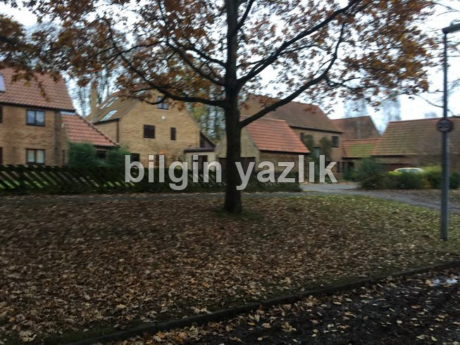
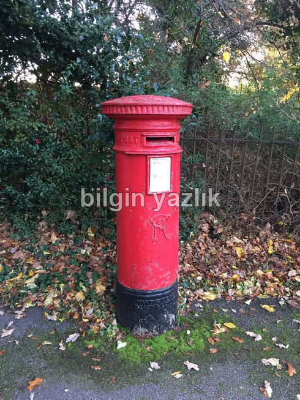
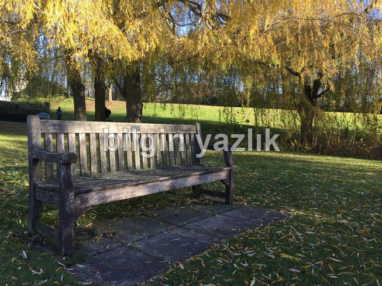
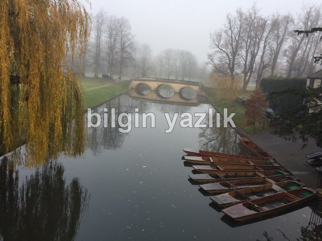
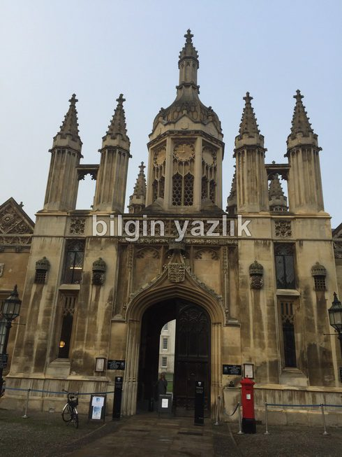
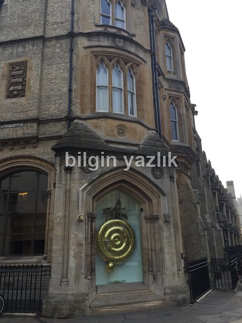
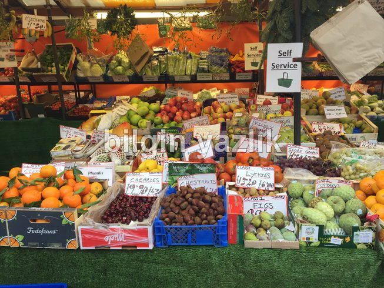
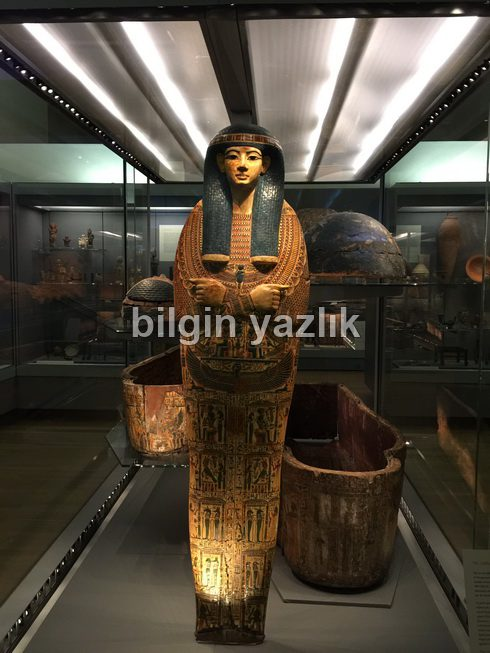
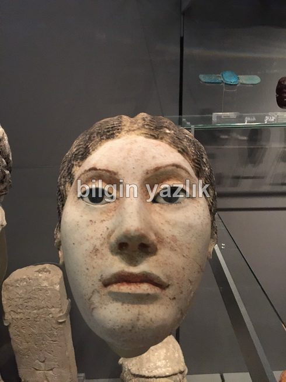
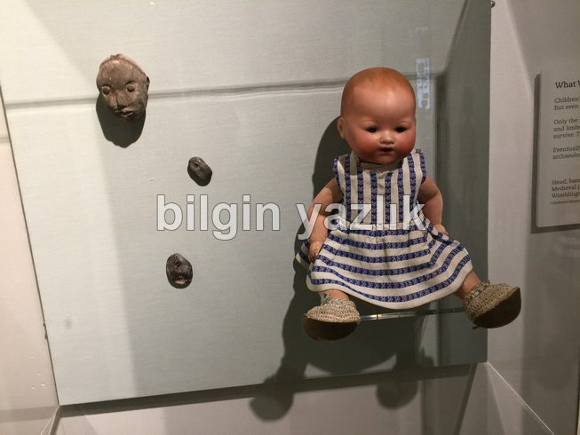
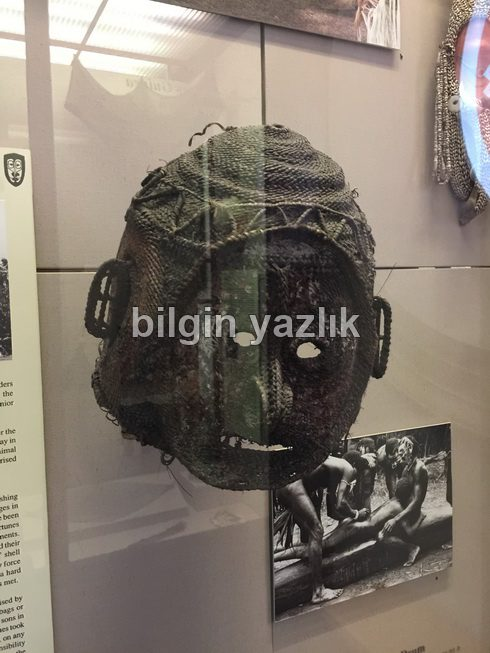
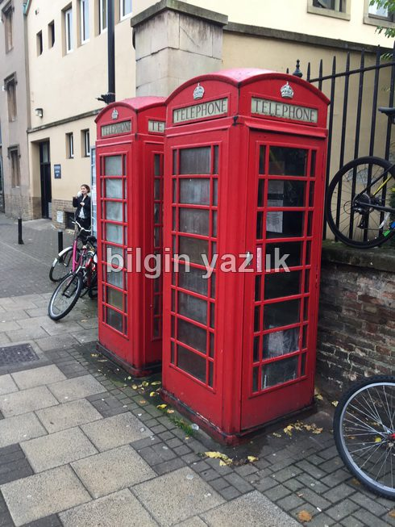
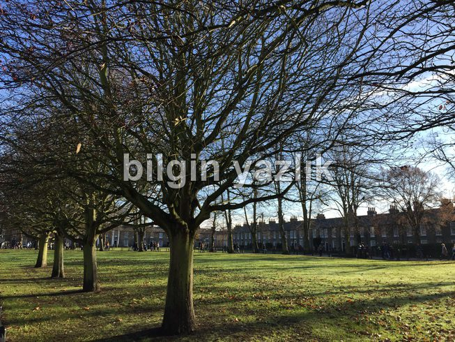
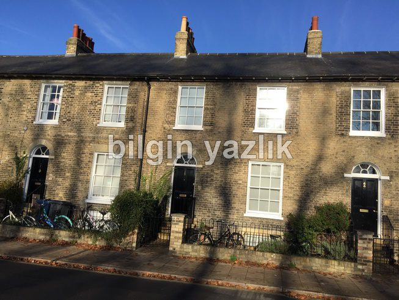
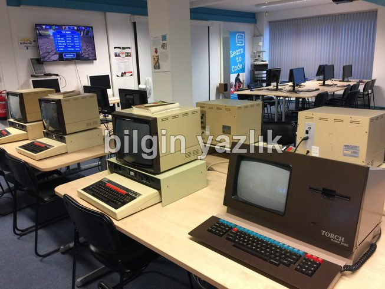
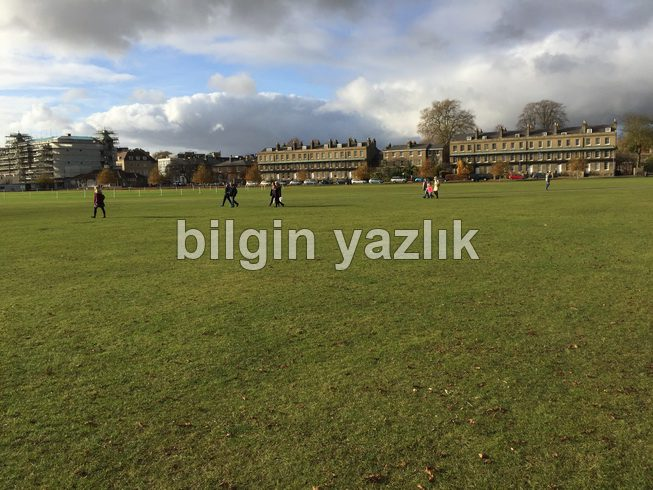
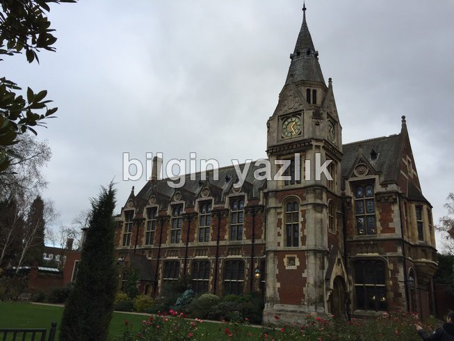
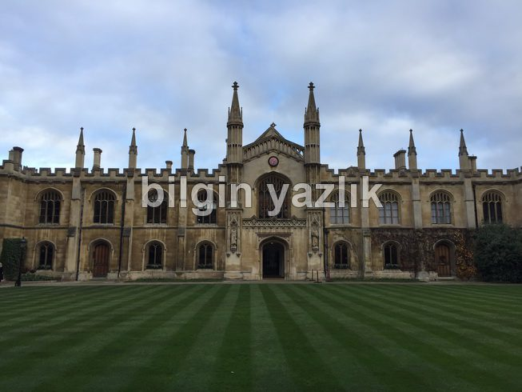
Bu yazı taliyol arşivinden taşınmıştır. · özgün kayıt